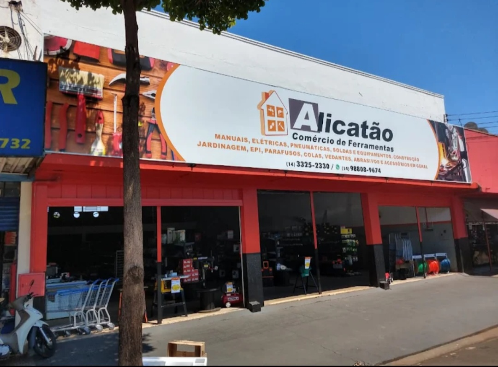
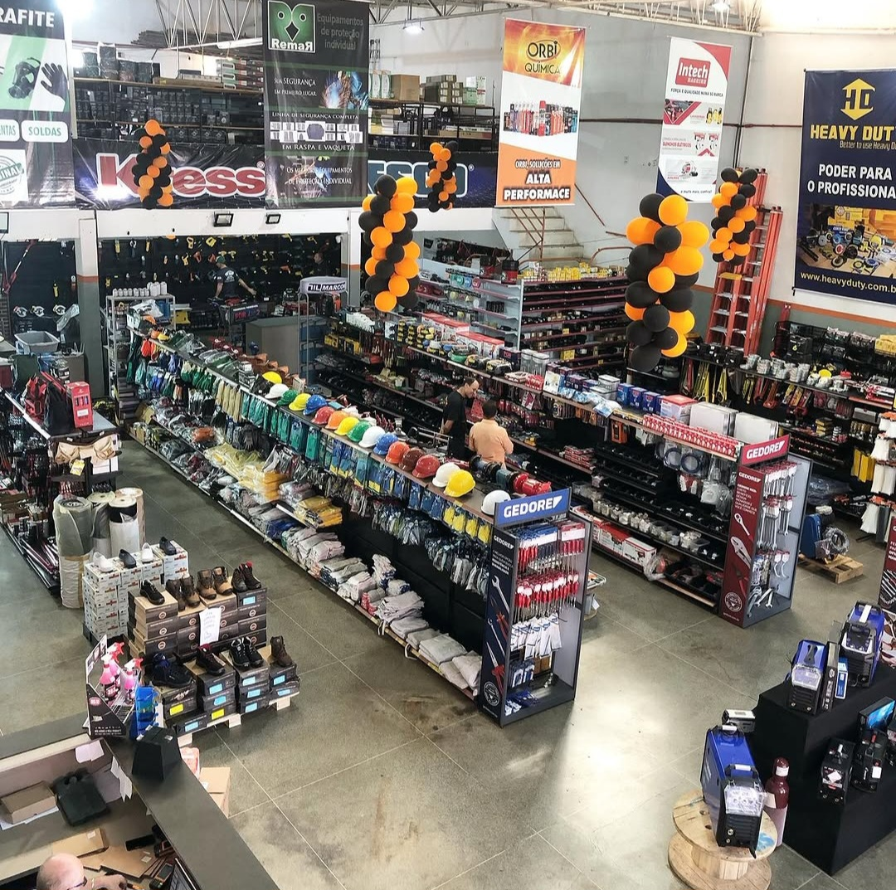
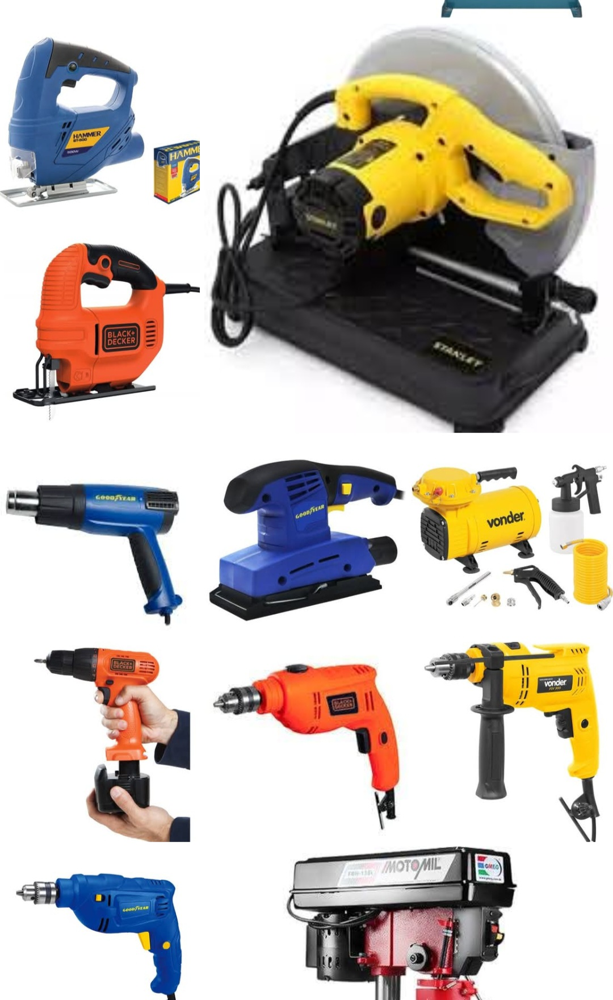
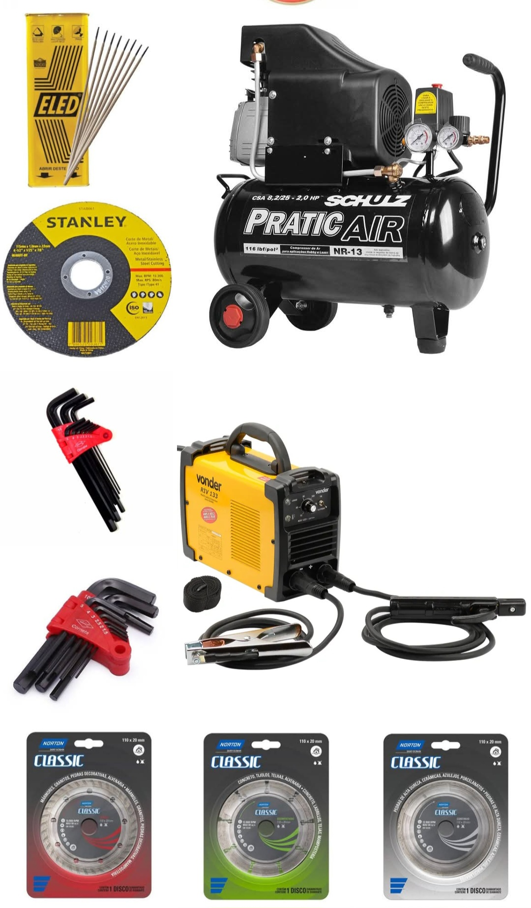
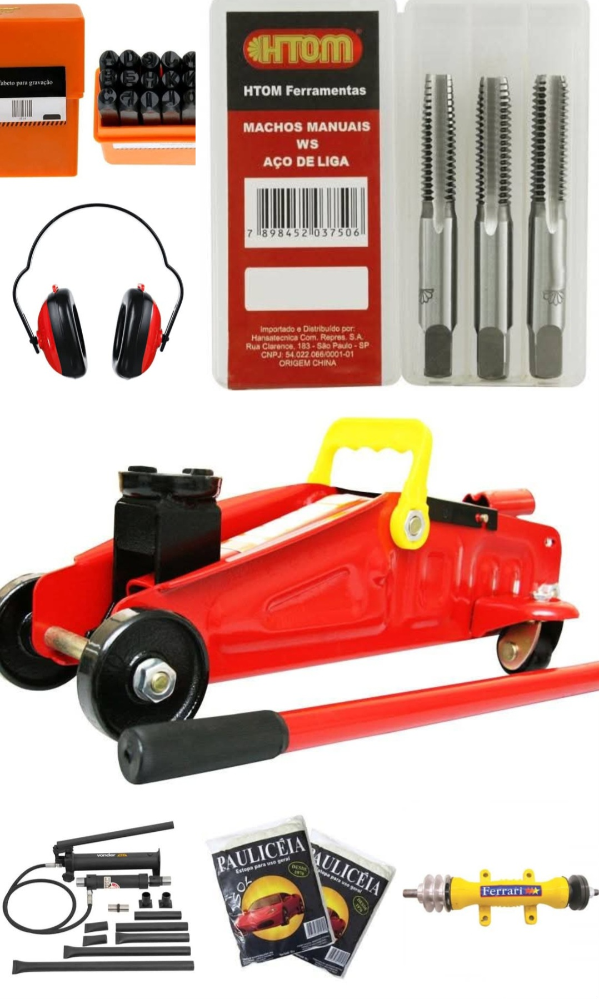

Comércio especializado • Ourinhos - SP
A Alicatão Ferramentas é referência em Ourinhos na venda de ferramentas e equipamentos profissionais, atendendo desde o uso doméstico até demandas industriais.
Trabalhando com produtos de alta qualidade, oferece soluções completas para construção, manutenção, serralheria, mecânica, jardinagem e muito mais.
Com grande variedade em estoque e atendimento especializado, a empresa garante praticidade, durabilidade e segurança para seus clientes.
Endereço: Rua dos Expedicionários, 820 - Centro
Cidade: Ourinhos - SP
Falar no WhatsApp Ligar✔ Ferramentas manuais ✔ Ferramentas elétricas ✔ Ferramentas pneumáticas ✔ Equipamentos de solda ✔ EPIs (Equipamentos de proteção) ✔ Jardinagem ✔ Parafusos e fixadores ✔ Colas e vedantes ✔ Abrasivos e acessórios ✔ Equipamentos profissionais



